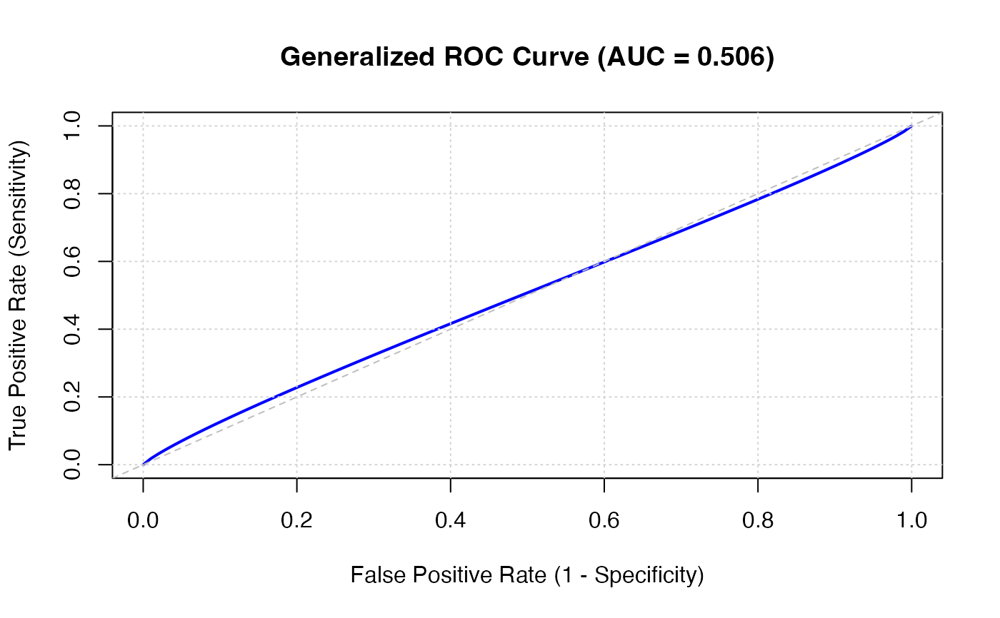
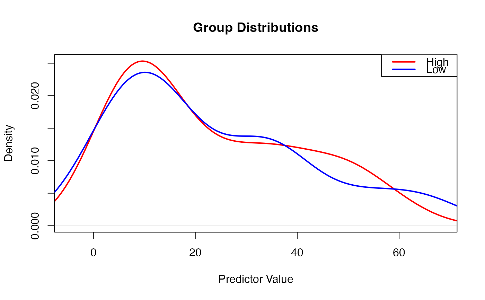

Generalized ROC (gROC) Analysis extends traditional binary ROC to handle continuous or ordinal outcomes, particularly when the outcome distributions have unequal variances across groups.
Usage
generalizedroc(
data,
outcome,
predictor,
assume_equal_variance = FALSE,
transformation = "none",
distribution_model = "normal",
calculate_auc = TRUE,
confidence_intervals = TRUE,
ci_method = "bootstrap",
bootstrap_samples = 1000,
confidence_level = 0.95,
show_diagnostics = TRUE,
variance_test = "levene",
optimal_threshold = TRUE,
plot_roc = TRUE,
plot_distributions = TRUE,
plot_diagnostic = FALSE,
random_seed = 42,
use_tram = FALSE,
covariates = NULL,
tram_model = "Colr",
covariate_values = "0, 0.5, 1",
plot_covariate_roc = TRUE,
plot_auc_vs_covariate = TRUE,
n_covariate_points = 50,
tram_constraints = "none",
censoring_aware = FALSE
)Arguments
- data
the data as a data frame
- outcome
a string naming the outcome variable (binary or ordinal)
- predictor
a string naming the continuous predictor variable
- assume_equal_variance
if TRUE, assumes equal variance across groups (standard ROC); if FALSE, allows unequal variances (generalized ROC)
- transformation
transformation applied to predictor before analysis
- distribution_model
assumed distribution for each group
- calculate_auc
calculate area under the generalized ROC curve
- confidence_intervals
calculate confidence intervals for AUC and other parameters
- ci_method
method for confidence interval calculation
- bootstrap_samples
number of bootstrap samples for CI calculation
- confidence_level
confidence level for intervals (default: 0.95 for 95 percent CI)
- show_diagnostics
show diagnostic tests for normality and variance equality
- variance_test
test for equality of variances across groups
- optimal_threshold
find optimal threshold using Youden's index
- plot_roc
plot the generalized ROC curve
- plot_distributions
plot predictor distributions for each outcome group
- plot_diagnostic
plot Q-Q plots for normality assessment
- random_seed
random seed for reproducible bootstrap sampling
- use_tram
Use tram package for covariate-adjusted transformation models
- covariates
Covariates to include in transformation model
- tram_model
Type of transformation model from tram package
- covariate_values
Comma-separated covariate values for ROC evaluation
- plot_covariate_roc
Plot ROC curves as function of covariate values
- plot_auc_vs_covariate
Plot how AUC changes across covariate values
- n_covariate_points
Number of points to evaluate across covariate range
- tram_constraints
Constraints on transformation function
- censoring_aware
Use censoring-aware transformation models
Value
A results object containing:
results$instructionsText | a html | ||||
results$aucTable | a table | ||||
results$parametersTable | a table | ||||
results$diagnosticsTable | a table | ||||
results$thresholdTable | a table | ||||
results$rocPlot | an image | ||||
results$distributionPlot | an image | ||||
results$qqPlot | an image | ||||
results$interpretationText | a html |
Tables can be converted to data frames with asDF or as.data.frame. For example:
results$aucTable$asDF
as.data.frame(results$aucTable)
Details
This method is particularly useful for continuous biomarkers (PD-L1 CPS, Ki67 percentage), quantitative imaging features, and ordinal scales where traditional ROC assumptions may be violated.
The generalized approach models the full distribution rather than imposing binary cutoffs, providing more flexible and robust performance assessment.
Examples
# \donttest{
# Example with continuous Ki67 percentage
data <- data.frame(
outcome = factor(sample(c("Low", "High"), 100, replace=TRUE)),
ki67_percent = c(rnorm(50, 10, 5), rnorm(50, 40, 15))
)
generalizedroc(
data = data,
outcome = 'outcome',
predictor = 'ki67_percent',
assume_equal_variance = FALSE,
transformation = 'none'
)
#>
#> GENERALIZED ROC ANALYSIS
#>
#> Generalized ROC Analysis
#>
#> Generalized ROC extends traditional binary ROC to handle continuous
#> outcomes with potentially unequal variances.
#>
#>
#>
#> When to Use:
#>
#>
#> Continuous biomarkers: PD-L1 CPS, Ki67 percentage, quantitative
#> imaging
#> Unequal variances: When outcome groups have different spreads
#> Non-normal distributions: With appropriate transformations or
#> non-parametric methods
#>
#>
#>
#> Key Differences from Standard ROC:
#>
#>
#> Standard ROC: Assumes equal variances (or uses rank-based methods)
#> Generalized ROC: Models full distribution with unequal variances
#> Interpretation: Same AUC scale (0.5-1.0), but accounts for
#> heteroscedasticity
#>
#>
#> Generalized ROC Performance
#> ───────────────────────────────────────────────────────────────────────────
#> AUC Lower CI Upper CI Standard Error Interpretation
#> ───────────────────────────────────────────────────────────────────────────
#> 0.5055150 0.3928485 0.6158149 0.05856590 Fail
#> ───────────────────────────────────────────────────────────────────────────
#>
#>
#> Distribution Parameters
#> ──────────────────────────────────────────────────────────────────────────────
#> Group N Mean SD Variance Skewness Kurtosis
#> ──────────────────────────────────────────────────────────────────────────────
#> High 43 23.22604 17.47268 305.2946 0.5672276 -1.0721671
#> Low 57 23.58519 19.22580 369.6314 0.7481194 -0.4881012
#> ──────────────────────────────────────────────────────────────────────────────
#>
#>
#> Distribution Diagnostics
#> ───────────────────────────────────────────────────────────────────────────────
#> Test Statistic p Result
#> ───────────────────────────────────────────────────────────────────────────────
#> Shapiro-Wilk (High) 0.8985602 0.0011317 Non-normal (p < 0.05)
#> Shapiro-Wilk (Low) 0.9133246 0.0005915 Non-normal (p < 0.05)
#> Levene's Test 0.1015641 0.7506389 Equal variances (p ≥ 0.05)
#> ───────────────────────────────────────────────────────────────────────────────
#>
#>
#> Optimal Threshold Analysis
#> ───────────────────────────────────────────────────────────────────────────────────────────
#> Optimal Threshold Sensitivity Specificity Youden's J PPV NPV
#> ───────────────────────────────────────────────────────────────────────────────────────────
#> 12.90408 0.6491228 0.4418605 0.09098327 0.6065574 0.4871795
#> ───────────────────────────────────────────────────────────────────────────────────────────
#>
#>
#> Interpretation Guide
#>
#>
#>
#> AUC Interpretation:
#>
#>
#> 0.90-1.00: Excellent discrimination
#> 0.80-0.90: Good discrimination
#> 0.70-0.80: Fair discrimination
#> 0.60-0.70: Poor discrimination
#> 0.50-0.60: Fail (barely better than chance)
#>
#>
#>
#> Variance Equality Tests:
#>
#>
#> p < 0.05: Reject equal variance assumption (use generalized ROC)
#> p ≥ 0.05: Equal variance plausible (standard ROC acceptable)
#>
#>
#>
#> Transformation Guide:
#>
#>
#> Log: Right-skewed data (e.g., biomarker concentrations)
#> Square root: Count data or mild skew
#> Box-Cox: Automatic optimal transformation
#>


# }